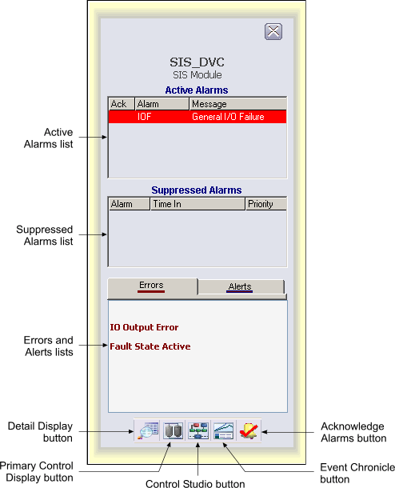

SIS module faceplate
A newly created SIS module defines as a property the faceplate display SIS_MOD_fp. The same is true for the module template SIS_DEFAULT, which also has two standard alarm parameters, BYPASS_ALM and IO_ALM.
The SIS module faceplate opens in runtime using the same techniques as those for control modules. The following shows an example of the SIS module faceplate in run mode.

The SIS module faceplate consists of a main display area, a "close picture" button, a pushpin button, the SIS module tag and description, and command buttons. The pushpin button appears when multiple faceplate capability has been enabled in UserSettings.grf. When multiple monitor capability has been enabled, a position button appears to the left of the pushpin.
The main display area of the SIS module faceplate contains an active alarm list and suppressed alarm list, and a tabbed control with two tabs, Errors and Alerts. The Errors tab lists text strings associated with active bits in SIF_ERRORS. The Alerts tab lists text strings associated with active bits in SIF_ALERTS. An indicator bar is visible under the word Errors or Alerts when one or more applicable bits are active.
You can open the SIS module faceplate in DeltaV Operate run mode by clicking an SLS alarm button in the Alarm Banner or clicking the Open Faceplate button on the Toolbar and typing the SIS module name.
The following items are contained in the SIS module faceplate:
Active Alarms list – Contains the currently active or unacknowledged alarms along with the alarm message and an indicator that shows if the alarm has been acknowledged.
Suppressed Alarms list – Contains the alarms that are currently suppressed (either shelved, out of service or both) along with the time they were suppressed.
Errors and Alerts lists – Lists text strings associated with SIF_ERRORS or SIF_ALERTS.
Toolbar – Click the icons from left to right to perform the following functions, respectively:
Detail Display button: open the detail display for this SIS module.
Primary Control Display button: open the primary control display associated with this SIS module.
Control Studio button: open Control Studio.
Event Chronicle button: open the Process History Viewer.
Acknowledge Alarms button: acknowledge all alarms on this module.